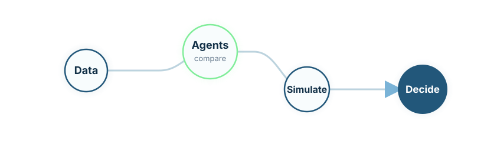

Data layer
Builds versioned patient-visit datasets, data dictionaries, transformation logs, and missingness maps.
Model-informed evidence
Model-informed workbenches for pharma R&D, dose optimisation, and clinical evidence generation.
LydiaRX develops governed analytical workbenches that combine statistical modelling, pharmacometrics, machine learning, simulation, synthetic challenge testing, and AI-assisted orchestration.
LydiaRX Pharma R&D Workbenches help biotech and pharma teams transform existing data into better hypotheses, better study designs, and clearer evidence packages.
The approach is especially relevant where efficacy, tolerability, adherence, adverse events, discontinuation, and patient heterogeneity interact. Instead of relying on a single model, the workbench runs several analytical agents and compares their outputs.

Builds versioned patient-visit datasets, data dictionaries, transformation logs, and missingness maps.
Runs independent statistical, pharmacometric, machine-learning, and simulation agents.
Generates artificial datasets with known mechanisms to test bias detection and robustness.
Tests candidate dose and titration policies under alternative assumptions.
Measures convergence, disagreement, calibration, sensitivity, and failure modes.
Produces reproducible reports, model cards, assumptions, warnings, and study-design proposals.
Maintains provenance, code versions, audit logs, decision traces, and pre-specified analysis plans.
Models weight, BMI, and related markers over time under different dose histories.
Models adverse-event occurrence, severity, persistence, recurrence, and discontinuation.
Estimates relationships between dose level and benefit-risk outcomes.
Relates drug exposure to efficacy and adverse effects when PK or concentration data exist.
Identifies patient profiles associated with response, non-response, intolerance, or dropout.
Simulates escalation, hold, dose reduction, restart, and stopping rules.
The workbench produces structured evidence for clinical and strategic decisions: candidate dosing strategies, titration rules, expected efficacy, expected adverse-event burden, dropout risk, subgroup behaviour, model disagreement, uncertainty, and recommended next studies.